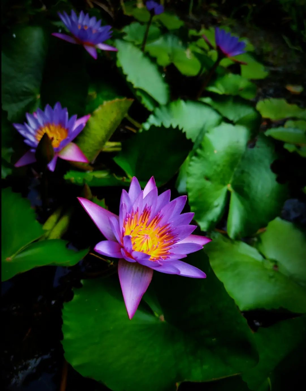
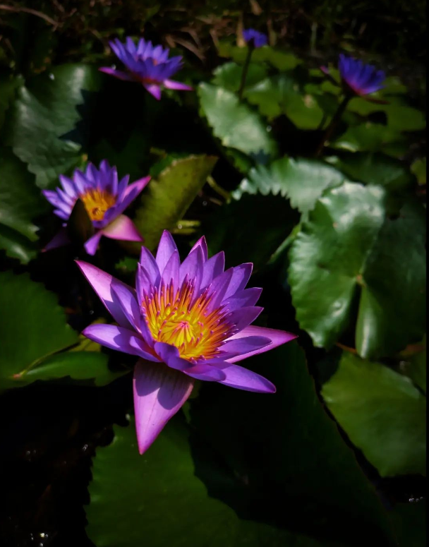
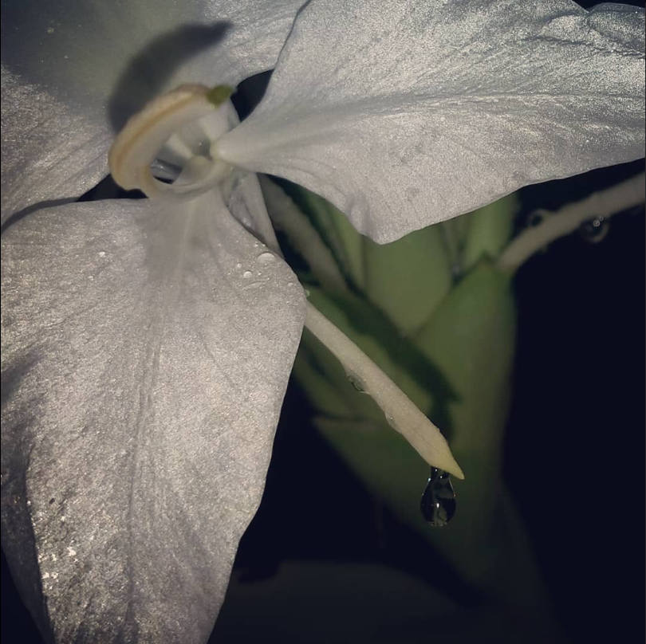
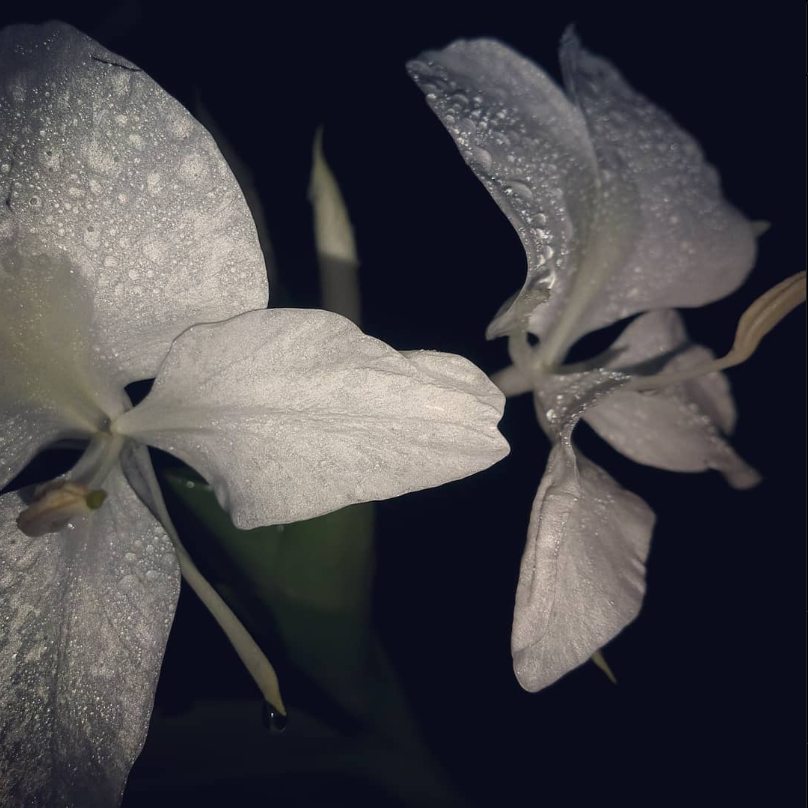

About Me
Hello! I'm a passionate Photographer with a love for Nature and an aspiring Data Scientist with a knack in Coding.
Photography
Photograph 1
Nature's symphony: a bee's delicate dance with vibrant blooms. 🌸🐝


Photograph 2
Water Lily- The symbol of Unity and finding Peace and Balance. Water Lilies are named after the Greek Nymph which symbolises Beauty that might have a dangerous side.


Photograph 3
Rain drops on a Flower.

